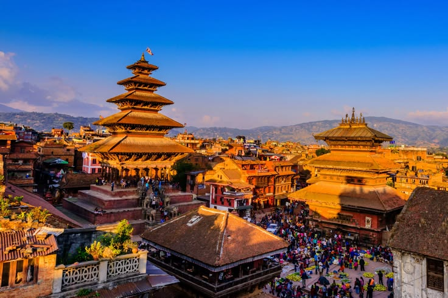
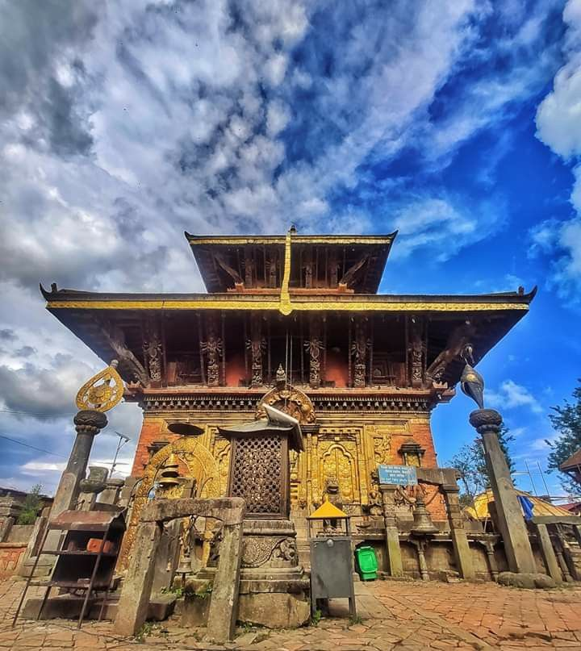
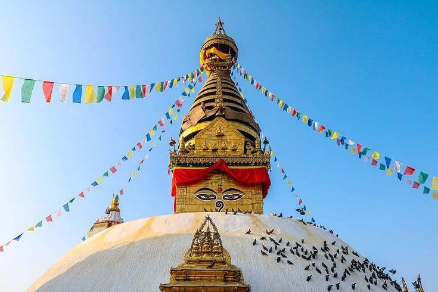
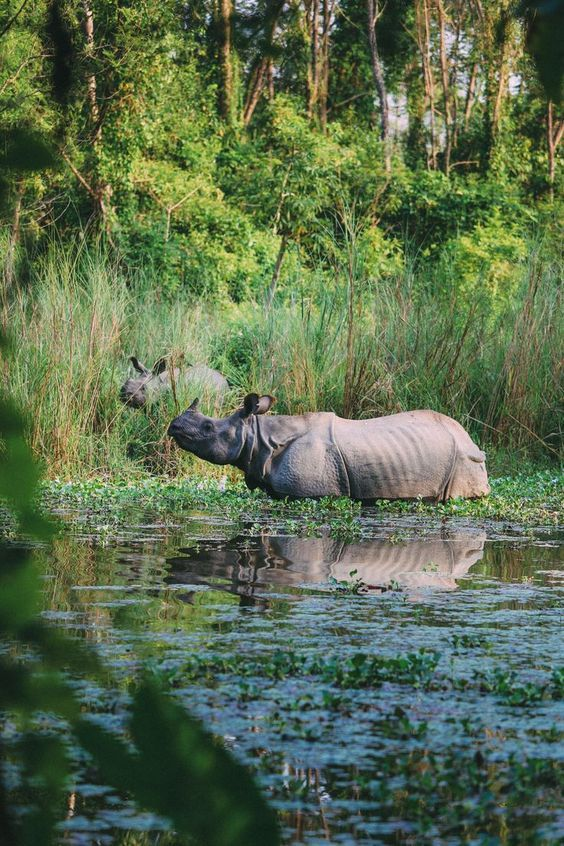

Nepal's Eternal Heritage
Kathmandu Durbar Square
Location: Kathmandu Valley
Best Time: Sep – May
Importance: Historical & Cultural
Major Attraction: Kumari Ghar & Taleju Temple

Patan Durbar Square
Location: Lalitpur (Patan)
Best Time: Sep – May
Importance: Architectural & Artistic
Major Attraction: Krishna Mandir & Patan Museum

Bhaktapur Durbar Square
Location: Bhaktapur
Best Time: Sep – May
Importance: Historical Art & Tradition
Major Attraction: 55-Window Palace & Nyatapola Temple

Changu Narayan
Location: Bhaktapur
Best Time: Sep – May
Importance: Oldest Hindu Temple in Nepal
Major Attraction: Ancient Stone Inscriptions

Pashupatinath Temple
Location: Kathmandu (Bagmati Bank)
Best Time: Oct – March
Importance: Sacred Hindu Shrine
Major Attraction: Evening Bagmati Aarti

Boudhanath Stupa
Location: Kathmandu
Best Time: Oct – March
Importance: Tibetan Buddhist Culture
Major Attraction: Massive Spherical Dome

Swayambhunath Stupa
Location: Kathmandu
Best Time: Oct – March
Importance: Cultural & Spiritual Symbol
Major Attraction: Panoramic Valley View & Monkey Habitat

Lumbini
Location: Rupandehi District
Best Time: Oct – March
Importance: Birthplace of Lord Buddha
Major Attraction: Maya Devi Temple & Ashoka Pillar

Chitwan National Park
Location: Terai Region
Best Time: Oct – Feb
Importance: Natural Biodiversity
Major Attraction: One-horned Rhinos & Jungle Safaris

Sagarmatha National Park
Location: Solukhumbu District
Best Time: Mar – May & Oct – Nov
Importance: Alpine Flora, Fauna & Mountaineering
Major Attraction: Mount Everest & Sherpa Culture